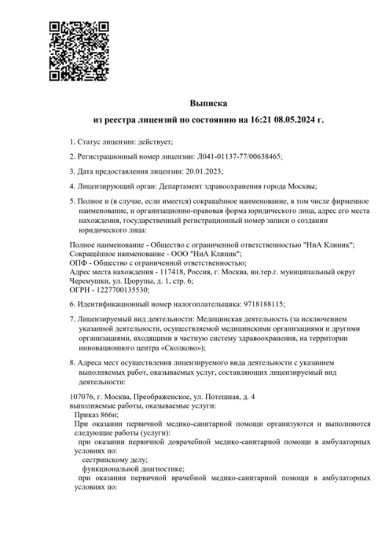

Вывод из запоя в Москве с гарантией анонимности
Цены на лечение
Этапы оказания помощи
-
Поступление в клинику вашей заявки или звонка
-
Поступление в клинику вашей заявки или звонка
-
Поступление в клинику вашей заявки или звонка
-
Поступление в клинику вашей заявки или звонка
-
Поступление в клинику вашей заявки или звонка
-
Поступление в клинику вашей заявки или звонка

Наркологическая клиника в Москве: опытные врачи, хорошие условия и гарантия анонимности
Алкогольная и наркотическая зависимость – одна из
основных возможных причин смерти во всех
странах. Чтобы освободиться от проблемы, больной
должен получить профессиональную помощь. Наркологическая клиника
«Запоям – нет» в Москве работает с
пациентами, независимо от степени тяжести их
состояния, и разрабатывает индивидуальное эффективное лечение,
которое гарантированно избавит от аддиктивного состояния.
Кроме приемного отделения и стационара, в
частных наркологических клиниках есть реабилитационный центр
и служба выезда специалистов на дом.
Помощь оказывается круглосуточно, при этом пациент
может связаться с медиком в любое
время суток для получения дополнительной информации
о лечении.
Выбор клиники
Зависимость – это психическое заболевание, при котором
у человека происходит расстройство воли, мешающее
справиться с компульсивной тягой к этанолу.
Справиться с ним самостоятельно, не обращаясь
к наркологу, можно только на первой
стадии алкоголизма. Но при развитии абстиненции,
когда психологическая тяга осложняется физической, требуется
обратиться в центр помощи зависимым.
Квалифицированные врачи принимают пациентов в крупных
и маленьких городах в государственных и
платных наркологических клиниках. Если учреждение имеет
лицензию, оно обязано опираться при лечебном
процессе на клинические рекомендации Минздрава, в
которые входит описание всех доказавших действенность
и безопасность методов.
Но в коммерческих центрах терапия проходит:
- Анонимно
- C обеспечением высокого уровня комфорта
- C применением современных методик и хороших препаратов
Наши лицензии и сертификаты
-
-

-

-
